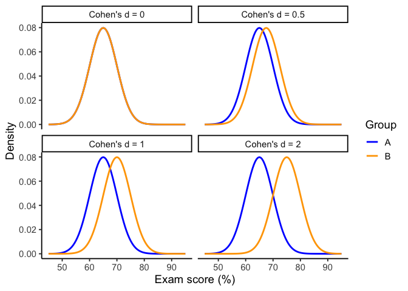
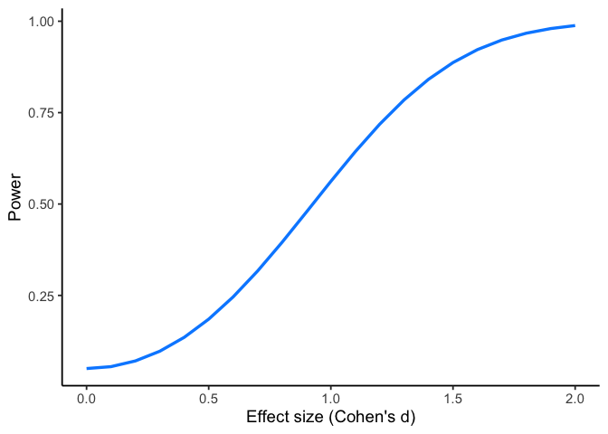
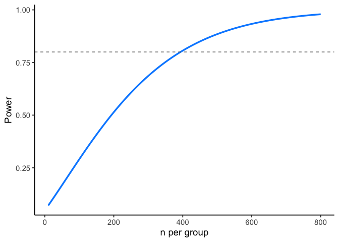
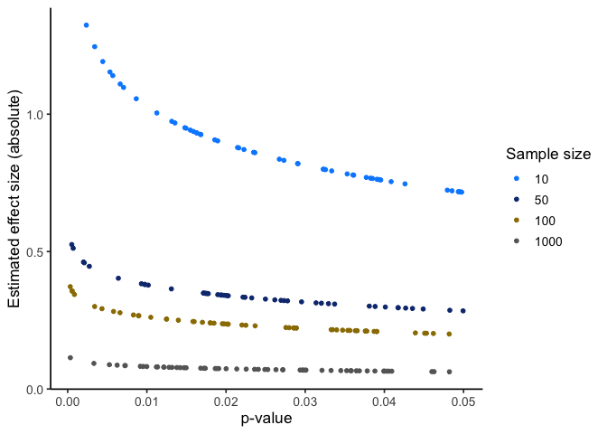

![Animation. A blue dot-dash bell curve centered on a magenta dashed line labeled mu sub 0, with red critical-value lines and shaded tails, appears first. A dark-green dot-dash curve of the same width is added, centered on a lime-green dotted line labeled x-bar, with a confidence interval bar underneath and an arrow showing the distance between mu sub 0 and x-bar in standard errors. The green curve slides right in steps from 0.8 to 2.4 standard errors; a gray Fail to reject box turns into a red Reject box once the distance passes 1.96.](imgs/gifs/ch5_recap.gif)
5 Errors, Power, and Effect Size
It is better to be roughly right than precisely wrong.
Attributed to John Maynard Keynes
Chapter 4 ended with a hypothesis test that either rejects \(H_0\) or fails to reject it.
This chapter first asks how often that decision is wrong, and in which direction. It then asks how large the effect is and whether the study had enough data to detect it. It closes with how to report a result.
5.1 Errors in hypothesis testing
Sometimes, even when we apply the test correctly, sampling variability can lead us to the wrong conclusion.
Type I error: rejecting \(H_0\) when \(H_0\) is true. It is a false positive, or false alarm, like a smoke alarm going off when there is no fire. If \(H_0\) is true, the probability of a Type I error is \(\alpha\), the significance level from Chapter 4. By convention, \(\alpha\) is often set at 0.05 (5%).
Type II error: failing to reject \(H_0\) when \(H_0\) is false. It is a missed signal, like a smoke alarm staying silent when there is a fire. The probability of a Type II error is \(\beta\). Its value depends on how far the true mean is from \(\mu_0\), which the figures below show.
An error here means the decision does not match the truth, at a rate the design sets. It is not a mistake by the person running the test.
The table crosses the two possible decisions with the two possible truths, giving two correct outcomes and two errors.
| Decision | If the null hypothesis is True | If the null hypothesis is False |
|---|---|---|
| Reject \(H_0\) | Type I error (prob = \(\alpha\)) | Correct (prob = \(1 - \beta\), the power) |
| Fail to reject \(H_0\) | Correct (prob = \(1 - \alpha\)) | Type II error (prob = \(\beta\)) |
The probability \(1 - \beta\) of correctly rejecting a false \(H_0\) is the power of the test (defined in the Working definitions later in this chapter).
For a fixed sample size and effect size, lowering \(\alpha\) raises \(\beta\). A smaller \(\alpha\) moves the critical values farther from \(\mu_0\), so more samples from a population with a real difference fall short of them, and the test fails to reject. Rows 2 and 3 of Table 5.3 later show this in numbers for one design.
Which error costs more depends on the study. Table 5.1 gives the cost of each error for three tests. The first two appear later in this chapter.
| Test | Type I error here | Type II error here | Which is worse here (a judgment call) |
|---|---|---|---|
| No-idling rule near schools, \(H_0\): the rule did not change PM2.5 | Keep a rule that does nothing | Drop a rule that works | Here, Type II would be worse. Kids would breathe idling exhaust that the rule would have cut. |
| Discharge permit limit, \(H_0\): \(\mu = 10\) mg/L | Act on an exceedance that is not there | Keep operating while the discharge exceeds the limit | Here, Type II is worse for the river, which keeps getting the excess discharge. Type I is probably worse for the plant, which pays to fix a problem it does not have. |
| Removing a species’ protected status, \(H_0\): the population has not recovered | Remove protection from a population that has not recovered | Keep protecting a population that has recovered | Here, Type I would be worse. Losing protection too early could send the population back into decline, while extra years of protection mostly cost money and paperwork. |
Figure 5.1 recaps the test from Chapter 4. It shows two sampling distributions of the sample mean. The blue one is centered on \(\mu_0\) and shows the sample means we would expect if \(H_0\) were true. The green one is centered on our sample’s \(\bar{x}\). The distance between their centers, in standard errors, decides whether we reject \(H_0\). As in Chapter 4, the figures treat \(\sigma\) as known, so their standard error is \(\sigma/\sqrt{n}\). The simulations later in the chapter run \(t\)-tests, which estimate it with \(s/\sqrt{n}\) (Chapter 6).
- In Figure 5.2, the true population mean (orange) is the same as \(\mu_0\). By chance, however, the sample mean is 2.4 standard errors from \(\mu_0\), past the critical value at 1.96 standard errors, and the 95% confidence interval (CI, Chapter 4) excludes \(\mu_0\). The test rejects \(H_0\) even though it is true, which is a Type I error.
![A blue dot-dash bell curve centered on a magenta dashed line labeled mu sub 0, with red critical-value lines and shaded tails. A solid orange line labeled mu lies exactly on the magenta line, and a wide, low orange bell curve is centered there too. A dark-green dot-dash bell curve of the same width as the blue one is to the right, centered on a thick lime-green dotted line labeled x-bar that lies just past the right critical value. The thick dark-green confidence interval bar under it starts just to the right of mu sub 0, so it excludes mu sub 0.](05-Hypothesis_Testing_files/figure-html/fig-5key.type1_error-1.png)
- In Figure 5.3, the true population mean (orange) is 4 standard errors from \(\mu_0\). By chance, however, the sample mean is only 1.5 standard errors from \(\mu_0\), inside the critical value, and the CI includes \(\mu_0\). The test fails to reject \(H_0\) even though it is false, which is a Type II error.
These two bullets describe each decision two ways. For a two-tailed test at \(\alpha = 0.05\), the sample mean falls past a critical value exactly when the 95% confidence interval excludes \(\mu_0\). The critical values are drawn around \(\mu_0\) and ask whether \(\bar{x}\) is far from it. The confidence interval is drawn around \(\bar{x}\) and asks whether \(\mu_0\) is far from it. Both use the same distance, 1.96 standard errors.
![A blue dot-dash bell curve centered on a magenta dashed line labeled mu sub 0, with red critical-value lines and shaded tails. Well to the right, a solid orange line labeled mu marks the center of a wide, low orange bell curve. A dark-green dot-dash bell curve of the same width as the blue one is between them, centered on a thick lime-green dotted line labeled x-bar that lies inside the right critical value. The thick dark-green confidence interval bar under it reaches back past mu sub 0, so it includes mu sub 0.](05-Hypothesis_Testing_files/figure-html/fig-5key.type2_error-1.png)
Those two figures show what a wrong conclusion looks like for one unlucky sample. They do not show how often it happens. The green curve in them is built from that one sample, centered on its \(\bar{x}\). To see how often an error happens, center the sampling distribution on a possible value of the true mean instead. That curve shows how far from \(\mu_0\) the sample mean would be across all the samples we could have drawn if that value were the true mean.
Figure 4.19 drew the possible true populations under \(H_a\) as a family of curves on either side of \(\mu_0\), and \(\mu_a\) is the center of one of them. In Chapter 4’s terms, the curve centered on \(\mu_a\) is one possible true population distribution. The estimated population distribution is a different curve, built from the sample. \(\mu_a\) is a value we choose, usually the smallest change that would alter what we do. Because we never know the true \(\mu\), we ask how the test would perform if \(\mu_a\) were true. \(\mu_a\) is not the sample mean or a critical value. The farther \(\mu_a\) is from \(\mu_0\), the less likely the test is to miss the difference.
Figure 5.4 centers the sampling distribution on \(\mu_a\). The blue curve is the sampling distribution of the sample mean under \(H_0\), the one that sets the critical values. The orange curve is the sampling distribution of the sample mean if \(\mu = \mu_a\). Because it shows sample means, it has the same width as the blue curve, the standard error \(\sigma/\sqrt{n}\). These figures use \(n = 4\), so the standard error is \(\sigma/\sqrt{4} = \sigma/2\), and the orange curve here is half as wide as the orange population curve in the last two figures.
- \(\alpha\) is the red area in the tails of the blue curve, past the critical values. If \(H_0\) is true, \(\alpha\) is how often the sample mean falls in the rejection region by chance. Computing \(\alpha\) needs only the blue curve, so the top panel has no orange curve. The orange curve appears in the bottom panel, for \(\beta\).
- \(\beta\) is the gray area under the orange curve between the critical values. If \(\mu = \mu_a\), that is how often the sample mean fails to reach the rejection region and a real difference goes undetected.
- Power, \(1-\beta\), is the rest of the orange curve, the part past the critical values.
![Two stacked panels sharing the same axes. The top panel shows a single blue dot-dash bell curve centered at the null mean, marked with a magenta dashed vertical line labeled mu sub 0, with red vertical lines labeled minus crit and plus crit at the critical values on either side and small red shaded tails beyond them, each labeled alpha over two. Its legend lists only the blue curve, the sampling distribution of the sample mean under H0. The bottom panel repeats that curve and adds an orange dot-dash bell curve of the same width centered well to the right. The region under the orange curve lying between the two critical-value lines is shaded gray and labeled beta, while the part of the orange curve past the right critical line is shaded orange and labeled power. The bottom panel's legend lists both curves.](05-Hypothesis_Testing_files/figure-html/fig-5alpha-beta-1.png)
In Figure 5.4, \(\mu_a\) is 2.5 standard errors above \(\mu_0\), which leaves \(\beta = 0.29\) and power \(= 0.71\). This design misses a real difference of that size in almost three tries out of ten. Slide the orange curve farther right, meaning a larger real difference, and the gray area shrinks. Move the red lines outward, meaning a smaller \(\alpha\), and the gray area grows.
5.1.1 Effect of sample size on errors
Sample size mainly affects Type II error. As \(n\) grows, the sampling distribution narrows, true effects are easier to detect, \(\beta\) falls, and power rises. With a fixed \(\alpha\) and correct assumptions, the long-run Type I error rate stays at \(\alpha\) for any \(n\), because the critical values are placed so that the area past them under the \(H_0\) curve is \(\alpha\) at every sample size.
The actual Type I rate can differ from \(\alpha\) in two cases. At small \(n\), it can drift from \(\alpha\) when the sampling distribution of the mean is not close to normal (Chapter 3), for example when the population is strongly skewed. Testing the data again each time new observations arrive also raises the Type I rate, at any \(n\), because each new test is another chance for the sample mean to fall in the rejection region by chance.
Figure 5.5 shows the effect of \(n\) on Type II error with the same \(\mu_0\) and the same true \(\mu\). In both panels the sample mean is equally unlucky, 2.5 standard errors below \(\mu\). With the smaller sample, \(\mu\) is 4 standard errors from \(\mu_0\), so \(\bar{x}\) is 1.5 standard errors from \(\mu_0\), inside the critical value. The confidence interval still catches \(\mu_0\), and we fail to reject. With four times the sample, the standard error halves, because \(\sqrt{4} = 2\). The same distance from \(\mu_0\) to \(\mu\) is now 8 standard errors, so \(\bar{x}\) is 5.5 standard errors from \(\mu_0\). The interval clears \(\mu_0\), and we reject \(H_0\).
![Two stacked panels on the same axes. Both show a blue dot-dash curve centered on a magenta dashed line labeled mu sub 0 with red critical lines, a wide orange curve centered on an orange line labeled mu well to the right, and a dark-green dot-dash curve centered on a lime-green dotted line labeled x-bar between them, with a dark-green confidence interval bar underneath. Top panel: the blue and green curves are wide and short, the interval bar reaches back past mu sub 0, and a gray box reads Fail to reject. Bottom panel: the blue and green curves are half as wide and twice as tall, x-bar is closer to mu, the interval bar ends well to the right of mu sub 0, and a red box reads Reject. The orange curve is the same in both panels.](05-Hypothesis_Testing_files/figure-html/fig-5type2-samplesize-1.png)
5.1.2 How to interpret \(p\)-values
A \(p\)-value is the probability, assuming \(H_0\) is true, of obtaining a test statistic at least as extreme as the one we observed. We reject at level \(\alpha\) when \(p<\alpha\). \(\alpha\) is chosen before the data are collected, and it sets how far out the critical values are. The \(p\)-value is computed from the data, and it measures how far out the observed test statistic is.
Tails. The \(p\)-value includes the area in the tail or tails that \(H_a\) points to. For a two-tailed test, add the areas in both tails. For a one-tailed test, use only the tail in the direction \(H_a\) states.
CautionWarning: Three misreadings of a \(p\)-value
- \(p\) is the probability of a test statistic at least this extreme if \(H_0\) is true. It is not the probability that \(H_0\) is true.
- A tiny \(p\) is not “super significant.” It means only that the data would be very unlikely if \(H_0\) were true. The effect itself can still be tiny and not worth acting on, especially with a large \(n\). Report an effect size and a CI so a reader can judge whether it matters.
- A large \(p\) does not show that there is no effect. With small \(n\), true effects can yield large \(p\) (low power).
5.2 Beyond the 0.05 cutoff
Effect size and power answer two questions that a decision at \(\alpha = 0.05\) leaves open. People who act on a result, such as scientists, managers, and policymakers, need to know how large an effect is and how likely the study was to detect it.
Working definitions
Statistical significance: a result is statistically significant when \(p < \alpha\), which means the data would be unlikely if \(H_0\) were true.
Effect: the difference a study is about, such as how far apart two group means are, or how far a mean is from the value \(H_0\) states (Chapter 4).
Effect size: the number that says how large the effect is, in the study’s units or in standard deviations.
Practical significance: the effect is large enough to change what someone does about it. This is a judgment about the world, not a calculation. With a large enough \(n\), a result can be statistically significant and practically trivial. With too small an \(n\), a result can be practically important and still not statistically significant.
Power (\(1-\beta\)): the probability that your design correctly rejects \(H_0\) when a real effect of a specified size exists, at your chosen \(\alpha\).
Choose the effect to detect and plan power before you sample. Decide what effect is meaningful for your context (e.g., a 0.3 mg/L nitrate reduction) and choose a sample size that gives adequate power, commonly 80%, to detect that effect.
5.2.1 One tail or two
The choice between a one-tailed and a two-tailed test changes power. Section 4.5.1 allowed a one-tailed test only when a difference in the other direction would not change your decision or action. Practical significance asks the same kind of question, whether a result would change what someone does. You can therefore answer Chapter 4’s question before you collect data, by deciding which results would change your action. A one-tailed test is justified when
- the direction is set before seeing the data, and
- a result in the other direction would lead to the same action as no result.
A city testing whether a no-idling rule changed PM2.5 near schools would act on a rise just as much as on a drop, so that test stays two-tailed. For a plant checking whether its discharge exceeds a permit limit of 10 mg/L, a mean below the limit leads to the same action as a mean at the limit, which is to keep operating. That test can be one-tailed, as long as the plant wrote the direction down before sampling:
\[H_a: \mu > 10\]
A one-tailed test puts all of \(\alpha\) in one tail. Its critical value is the point with 5% of the \(H_0\) curve beyond it, 1.645, where the two-tailed test uses the point with 2.5% beyond it, 1.96. Moving the critical value in from 1.96 to 1.645 makes a real effect in that direction easier to catch. For the design in Figure 5.4, \(\beta\) drops from 0.29 to 0.20 and power rises from 0.71 to 0.80. Figure 5.6 draws both tests on that design.
![Two stacked panels sharing the same axes. Both show a blue dot-dash bell curve centered on a magenta dashed line labeled mu sub 0 and an orange dot-dash bell curve of the same width centered to the right. Top panel, titled two-tailed: red lines at minus crit and plus crit, a small red shaded tail on each side, a gray area under the orange curve between the red lines labeled beta, and an orange area past the right red line labeled power. Bottom panel, titled one-tailed: a single red line at plus crit, closer to mu sub 0 than in the top panel, with a larger red shaded tail on the right only. The gray beta area under the orange curve is smaller and the orange power area is larger. A faint orange curve of the same width is centered the same distance to the left of mu sub 0, with no rejection region under it, labeled never detected.](05-Hypothesis_Testing_files/figure-html/fig-5one-two-tail-1.png)
The cost is that a one-tailed test cannot detect an effect in the other direction at all, however large it is. In the bottom panel of Figure 5.6, the faint curve on the left is an effect of the same size in the other direction, and no rejection region lies under it.
Choosing the tail after looking at which way the data went amounts to a two-tailed test at \(\alpha = 0.10\). If \(H_0\) is true, the sample mean is equally likely to fall on either side of \(\mu_0\). Whichever side it falls on, you put a 5% rejection region there, so 5% of samples can be rejected in the right tail and another 5% in the left. The actual Type I error rate is then 0.10, double the 0.05 you report.
5.3 Effect size
Effect size comes in two kinds of units. You can express it in original units, which carry practical meaning, or in standardized units, which let you compare across scales.
Practical (original units). Use the scale stakeholders recognize.
- Exams: “Treatment improved scores by 5 percentage points” (half a letter grade).
- Time-on-task: “New training reduces practice time by 1,000 hours out of 10,000” (a 10% reduction).
These statements are easy to interpret, but they are hard to compare across contexts or measures. To say whether a 5-point exam gain is a larger effect than a 1,000-hour cut in practice time, you need each one measured against the variability of its own scale.
Standardized (unitless). When units are unfamiliar or scales differ, standardize by typical variability. The most common standardized effect size is Cohen’s \(d\) (Cohen 1988). Cohen’s \(d\) is the raw difference, \(\Delta\), divided by the population standard deviation, so it gives the effect in standard deviations:
\[\text{Cohen's } d = \frac{\Delta}{\sigma}\]
\(\Delta\) is the effect in the study’s units. It is \(\mu_1 - \mu_2\) when comparing two groups, or \(\mu - \mu_0\) when testing one mean against a reference value.
Cohen’s \(d\) and \(z\) both put the effect in the numerator but divide by different things. Section 4.4.1 gave the general shape, effect over error, and filled it in with the \(z\):
\[z = \frac{\bar{x}-\mu_0}{\sigma/\sqrt{n}} \qquad \text{versus} \qquad \text{Cohen's } d = \frac{\mu-\mu_0}{\sigma}\]
In \(z\) the numerator is the observed effect, \(\bar{x}-\mu_0\). In Cohen’s \(d\) it is the true effect, \(\mu-\mu_0\), which \(\bar{x}-\mu_0\) estimates. The test statistic divides by the standard error, which shrinks as \(n\) grows, so \(z\) gets larger with more data even when the effect stays exactly the same. Quadrupling \(n\) halves the standard error, so the same \(\bar{x}-\mu_0\) gives twice the \(z\). Cohen’s \(d\) divides by the standard deviation, which does not shrink with \(n\), so Cohen’s \(d\) reports the size of the effect itself. Table 5.2 lines the two up.
| \(z\) | Cohen’s \(d\) | |
|---|---|---|
| Numerator | \(\bar{x}-\mu_0\) (observed effect) | \(\mu-\mu_0\) (true effect, estimated by \(\bar{x}-\mu_0\)) |
| Denominator | \(\sigma/\sqrt{n}\) | \(\sigma\) |
| As \(n\) grows | Grows for the same effect | Stays the same |
| Answers | Is the effect distinguishable from 0? | How large is the effect? |
A large test statistic therefore does not mean a large effect. In a one-sample test, dividing by \(\sigma/\sqrt{n}\) is the same as dividing by \(\sigma\) and multiplying by \(\sqrt{n}\), so \(z = \frac{\bar{x}-\mu_0}{\sigma}\sqrt{n}\). The fraction is Cohen’s \(d\) computed from the sample, with \(\bar{x}\) in place of \(\mu\), so \(z = (\text{Cohen's } d)\sqrt{n}\). For an observed Cohen’s \(d = 0.05\):
\[\begin{aligned} n = 100: \quad z &= 0.05 \times \sqrt{100} = 0.5 \\[1.2ex] n = 10{,}000: \quad z &= 0.05 \times \sqrt{10{,}000} = 5 \end{aligned}\]
The \(t\) in Chapter 6 is the same ratio with an estimated \(s\) in place of a known \(\sigma\), so the same holds for \(t\).
Environmental example (biodiversity index). Suppose an index increases from 3 to 4 after reforestation.
In raw units: +1 index point.
In standardized terms:
- If the SD across sites is 1.0, then Cohen’s \(d = 1.0\), a large shift by the usual guideline (0.8 or more is large, see the Tip below).
- If the SD is 10, then Cohen’s \(d = 0.10\), a small shift (below the guideline’s 0.2).
The same 1-point increase is a large effect where the index varies little across sites and a small one where it varies a lot.
Planning starts from \(\Delta\). To plan a study, choose the value of \(\Delta\) to plan for, in the units of the study. It might be the effect you expect to see, or the smallest difference that would change what you do. A power analysis also needs an estimate of \(\sigma\), and with \(\Delta\) and \(\sigma\) you have Cohen’s \(d = \Delta/\sigma\).
TipTip: Estimating and reporting Cohen’s \(d\) in practice
- With measured data, \(\sigma\) is unknown, so estimate it from the sample. For two groups, use the pooled SD from Section 6.5.
- Heuristics (context matters): Cohen’s \(d \approx 0.2\) (small), 0.5 (medium), 0.8 (large).
- A “small” Cohen’s \(d\) can still be important (e.g., small reductions in lead or PM2.5 can matter for health).
- Report the effect in the study’s units with a 95% CI, to show how precisely it was estimated. Report Cohen’s \(d\) as a single number.
Suppose we’re measuring final exam performance (percent correct). The class mean is 65% with a standard deviation of 5 percentage points. Group A is a control, while Group B receives some instructional treatment.
Figure 5.7 shows four possible scenarios, with Group B’s mean shifted by Cohen’s \(d = 0\), 0.5, 1 and 2.

In Figure 5.7, a half-SD shift (Cohen’s \(d = 0.5\), 2.5 points) leaves the two curves mostly overlapping, and a two-SD shift (Cohen’s \(d = 2\), 10 points) separates them.
In practice, we rarely know beforehand how big a shift to expect, so the power curves later in this chapter show power across a range of effect sizes.
5.4 Power
A design’s power is the probability that it correctly rejects \(H_0\) when a real effect of a specified size exists, at your chosen \(\alpha\). Effects vary in size, and designs vary in power. A design with low power will usually fail to reject \(H_0\) even when a real effect exists.
Power rises when:
- Effect size is larger.
- Sample size (\(n\)) is larger (smaller standard error).
- The cutoff for rejecting \(H_0\) is less strict (larger \(\alpha\)).
- Variability in the population is lower (smaller \(\sigma\)), for example from less measurement noise.
When you plan a study, you need to know how large \(n\) must be to reach 80% power, with \(\alpha\) fixed at 0.05, for the smallest effect that matters. Figure 5.10 answers that question for one effect size.
5.4.1 Estimating power by simulation
A simulation with the exam-score example shows how design choices change power. We simulate two groups of \(n=10\) each. We draw Group A (control) from a normal distribution with mean 65 and \(\sigma = 5\), and Group B (treatment) from one with mean 67.5, a shift of 2.5 points, or Cohen’s \(d=0.5\), a medium effect. These are the two distributions in Panel 2 of Figure 5.7.
Each simulated experiment compares the two groups with an independent-samples \(t\)-test. Section 6.5 covers this test. For now, treat it as a test that returns a \(p\)-value for the difference between two group means, the same job the \(z\) statistic in Chapter 4 does for one mean.
Before you look. One simulated experiment draws 10 scores for Group A and 10 for Group B, runs the \(t\)-test, and saves the \(p\)-value. The simulation repeats this 1,000 times and counts how often \(p < 0.05\), which is how often the test rejects \(H_0\) at \(\alpha = 0.05\). In every one of the 1,000 experiments, Group B’s true mean is 2.5 points higher. Decide roughly how often you expect the test to detect that difference with 10 per group.
The test detected the 2.5-point difference in about 22% of the 1,000 experiments. The proportion of simulated experiments that reject \(H_0\) estimates the design’s power, the probability that the test detects a real difference of this size. With \(n = 10\) per group, the test misses this medium-sized effect in about 78% of experiments.
5.4.2 How power changes
Each of the next three simulations changes one part of the previous design and reruns the 1,000 experiments.
- Larger \(n\). Doubling to \(n=20\) per group divides the standard error of each group mean by \(\sqrt{2}\), about 1.41, because the standard error is \(\sigma/\sqrt{n}\) and \(\sqrt{20}/\sqrt{10} = \sqrt{2}\).
That increases power to about 35%, up from about 22% at \(n = 10\) (rows 1 and 2 of Table 5.3).
- Smaller \(\alpha\). Making the cutoff stricter (e.g., \(\alpha=0.01\)) lowers power, because only experiments with \(p < 0.01\) now count as significant. We reuse the same \(n=20\) simulations and change only the cutoff.
Power falls to about 14% (row 3).
- Larger effect. If the treatment produces a 2-SD shift, Group B’s mean is \(65 + 2 \times 5 = 75\). We rerun the simulation with the same design at the same \(\alpha=0.01\).
The test rejected \(H_0\) in 100% of the 1,000 experiments (row 4). With a 2-SD difference, rejecting \(H_0\) is close to certain, even with 20 per group and \(\alpha = 0.01\).
Table 5.3 collects the four designs. Each row gives the simulated power and, next to it, the exact power for the same design, computed from the \(t\) distribution.
| \(n\) per group | \(\alpha\) | Group B mean (Cohen’s \(d\)) | Simulated power (1,000 runs) | Exact power |
|---|---|---|---|---|
| 10 | 0.05 | 67.5 (0.5) | 22% | 19% |
| 20 | 0.05 | 67.5 (0.5) | 35% | 34% |
| 20 | 0.01 | 67.5 (0.5) | 14% | 14% |
| 20 | 0.01 | 75 (2) | 100% | 99.97% |
Table 5.4 shows which way each change moves \(\alpha\), \(\beta\) and power, and Figure 5.8 draws each change on the design from Figure 5.4.
| Change | \(\alpha\) | \(\beta\) | Power | In Figure 5.8 |
|---|---|---|---|---|
| Larger \(n\) | Same | Down | Up | (a) |
| Smaller \(\alpha\) | Down | Up | Down | (b) |
| Larger \(\alpha\) | Up | Down | Up | (c) |
| Larger effect | Same | Down | Up | (d) |
![Four panels in a two-by-two grid, labeled a to d, each with a blue dot-dash curve centered on a magenta dashed line labeled mu sub 0, an orange dot-dash curve to its right, red critical-value lines with small red shaded tails, a gray area under the orange curve between the critical lines, and an orange area under the orange curve past the right critical line. Panel a, larger sample size: both curves are narrower and the gray area is smaller. Panel b, smaller alpha: the red lines sit farther out, the red tails are smaller, and the gray area is larger. Panel c, larger alpha: the red lines sit closer in, the red tails are larger, and the gray area is smaller. Panel d, larger effect: the orange curve sits farther right and the gray area is smaller. Each title gives beta before and after the change.](05-Hypothesis_Testing_files/figure-html/fig-5plan-changes-1.png)
5.4.3 Power curves
A design’s power depends on how large the true effect is. A power curve plots the power of a design against one quantity that varies, such as the true effect size or the sample size, with everything else held fixed. Figure 5.9 fixes the design at an independent-samples \(t\)-test with \(n=10\) per group and \(\alpha=0.05\), and plots power against the true effect size, Cohen’s \(d\).

With 10 per group, this design detects a medium effect (Cohen’s \(d=0.5\)) only about 19% of the time, a larger effect (Cohen’s \(d=0.8\)) about 40% of the time, and a very large effect (Cohen’s \(d=2\)) almost every time (about 99%). Only effects of about Cohen’s \(d = 1.3\) or larger reach 80% power with this design.
The simulation above estimated power at Cohen’s \(d = 0.5\) as about 22%. The two numbers differ because 1,000 simulated experiments give an estimate, while the curve is computed exactly.
The second curve holds the effect size fixed and varies the sample size. Suppose prior research suggests the effect is small (Cohen’s \(d=0.2\)). Figure 5.10 plots power against sample size for Cohen’s \(d=0.2\), with a dashed line at 80% power, a common planning target.

At 10 per group, power to detect Cohen’s \(d=0.2\) is about 7%. Reaching 80% power takes about 394 per group. At that sample size, 20% of studies would still fail to reject \(H_0\) for a real effect of Cohen’s \(d = 0.2\).
In a power analysis (defined in the next section), the \(n\) that reaches a power target such as 0.80 depends on the effect size and standard deviation you assumed. The 394 per group above assumes Cohen’s \(d = 0.2\), and assuming Cohen’s \(d = 0.3\) instead gives 176 per group. Report the assumed effect size and standard deviation alongside the \(n\).
5.4.4 Planning your design
Planning a study means working through the following, in order:
- Choose the \(\Delta\) to plan for, the smallest difference that would change what you do, stated in the units of the measurement.
- Choose \(\alpha\) (often 0.05; justify if different).
- Estimate variability, \(\sigma\) (pilot data, literature, or historical monitoring). With \(\Delta\) and \(\sigma\) you have Cohen’s \(d\), which is what a power analysis needs.
- Choose one- or two-tailed before data collection. The choice changes the critical value, so it changes the \(n\) you need.
- Compute \(n\) for \(\ge 80\%\) power (or explain tradeoffs if you can’t reach it).
This sequence is a formal power analysis. A formal power analysis finds the sample size \(n\) that gives a target power, usually 80%, for a chosen \(\Delta\), \(\sigma\), \(\alpha\) and number of tails, before any data are collected. It applies while you can still choose \(n\), for example when deciding how many plots to establish or how many samples a permit application commits you to. When the data already exist, as in your course project, \(n\) is fixed. Report the effect and its confidence interval instead.
CautionWarning: Post-hoc power
Post-hoc power is power computed after a study, using the effect size the study observed. It is a restatement of the \(p\)-value, so a non-significant result always has low post-hoc power. For a two-tailed \(z\)-test, a result with \(p = 0.05\) exactly has post-hoc power of about 50%, and any larger \(p\) gives less. Do not compute it. Power for a difference chosen in advance, such as the smallest effect that matters, is fine to report.
5.4.5 Low power and very large samples
A significant result from a low-power study often fails to replicate. A design with 30% power to detect an effect that is really there rejects \(H_0\) in only about 3 of 10 repeats, so a significant first result is usually followed by non-significant replications.
A significant result from a small study overstates the effect. When a small study does reach significance, its estimated effect size tends to be too large. When the null is true, that large estimate makes a false positive look convincing.
Huge \(n\) finds tiny effects. With very large samples, trivial differences can register as statistically significant. For example, a utility comparing two billing designs across 2 million households can find a 0.1% difference in electricity use statistically significant, even though a difference that small would not change which design it adopts. Report an effect size and a confidence interval alongside each \(p\)-value so a reader can judge whether a difference matters.
Figure 5.11 shows that a significant result from a small study overstates the effect. Each dot in the figure is one simulated study in which the true mean is exactly \(\mu_0\). We ran 1,000 studies at each of four sample sizes (10, 50, 100, and 1,000) and kept only the ones that gave \(p < 0.05\), about 50 at each size.
When the null hypothesis is true, 5% of tests still give \(p < 0.05\). In small samples, those false positives come with large estimated effect sizes, even though the true effect is zero. A one-sample \(t\)-test (Section 6.3) reaches \(p < 0.05\) only when \(|t|\) is beyond the \(t\) critical value. Because \(t = (\text{Cohen's } d)\sqrt{n}\) as well (the effect size section), \(|\text{Cohen's } d| = |t|/\sqrt{n}\) must be at least the critical value divided by \(\sqrt{n}\) (Table 5.5).
| \(n\) | \(t\) critical value | Smallest \(\lvert\text{Cohen's } d\rvert\) with \(p < 0.05\) |
|---|---|---|
| 10 | 2.26 | 0.72 |
| 1,000 | 1.96 | 0.06 |

5.5 Reporting results
A results statement is one sentence that states the finding in plain language and follows it with the supporting statistics, separated by commas.
Template: Plain-language finding, statistic with degrees of freedom (df, Section 6.2.2) or \(n\), \(p\)-value, effect size and CI.
What to include (in order):
- The finding in plain language, with its direction.
- The test name, when the statistic does not already identify the test (for example, a rank test or Welch’s \(t\)).
- Test statistic and its degrees of freedom (or sample size for \(z\)).
- Exact \(p\).
- The effect in the study’s units with its 95% CI (Chapter 6 shows how to build it for a mean difference), and Cohen’s \(d\) where the chapter that covers the test reports it.
Examples
The \(t\)-tests in these examples are covered in Chapter 6.
One-sample \(z\). The average mercury level within 10 km of the smelter, 0.62 mg/kg, was 0.12 mg/kg higher than the legal limit of 0.50 mg/kg, \(z = 2.85\), \(n = 32\), \(p = 0.004\), 95% CI [0.04, 0.20] mg/kg.
One-sample \(t\) with CI. Mean nitrate exceeded the target by 0.41 mg/L, \(t(31) = 2.60\), \(p = 0.014\), 95% CI [0.09, 0.73] mg/L.
Independent-samples \(t\) with effect size. Mean turbidity was 4.0 NTU higher at downstream sites than at upstream sites, \(t(58) = 3.10\), \(p = 0.003\), 95% CI [1.42, 6.58] NTU, Cohen’s \(d = 0.80\).
Not significant (state “fail to reject”). Mean canopy temperature did not differ significantly from the baseline, mean difference 0.30 °C, \(t(47) = 1.20\), \(p = 0.236\), 95% CI [-0.20, 0.80] °C, so we fail to reject \(H_0\).
Rounding and style
- Round test statistics to 2 decimals and \(p\) to 3 decimals (use \(p<0.001\) when needed).
- Use “fail to reject \(H_0\)” (not “accept”).
- State the direction the data went (“higher than,” “lower than”) when the test rejects, and “did not differ from” when it fails to reject.
Do / Don’t
- Do follow the sentence with one sentence on what the result means for the question.
- Do give units for every value.
- Do not restate methods.
- Do not claim proof.
5.6 Chapter Summary
Why it matters. A hypothesis test ends in reject or fail to reject, and that decision can be wrong in two ways. Effect size tells you how large the difference is, and power tells you whether the study could have detected it. Chapter 6 applies all of this to the \(t\)-tests.
Core ideas
- Two ways to be wrong. A Type I error rejects a true \(H_0\), at a rate you set with \(\alpha\). A Type II error fails to reject a false one. For a fixed design, lowering \(\alpha\) trades fewer Type I errors for more Type II errors. \(\alpha = 0.05\) is a widely used convention for where to make that trade.
- What a \(p\)-value measures. It is the probability, if \(H_0\) were true, of a test statistic at least as extreme as the one we observed. It is not the probability that \(H_0\) is true, and it says nothing about how large an effect is.
- Significance and effect size answer different questions. A significant result says the data would be unlikely if \(H_0\) were true. The standard error shrinks as \(n\) grows, so the same small difference produces a larger and larger test statistic. With a large enough \(n\), even a trivially small difference is likely to be significant. Report an effect size and a confidence interval next to every \(p\)-value so a reader can judge whether the result matters.
- One tail only when the other direction would not change the action. Choose a one-tailed test before seeing the data, and only when a result in the other direction would lead to the same action as no result. Choosing the tail afterward doubles the actual Type I error rate.
- Effect size in two kinds of units. The same difference can be written in original units, \(\Delta\), which carry practical meaning for the people who act on your result, or in standard deviations, Cohen’s \(d = \Delta/\sigma\), which makes results comparable across studies and scales. Report both when you can, and plan in \(\Delta\), because the smallest difference worth detecting is a judgment made in the units of the measurement.
- Power is set by the design. Power is the probability that a design correctly rejects \(H_0\) when a real effect of a specified size exists. It depends on \(n\), effect size, \(\alpha\), and variability together. An underpowered study usually misses real effects, and when it does reach significance, the effect it reports tends to be too large. Run a power analysis before collecting data, while \(n\) can still be chosen.
- Report a result as a sentence. State the direction in words, then give the statistic with its df or \(n\), the \(p\)-value, and the effect in the study’s units with its 95% CI, all separated by commas. Add Cohen’s \(d\) where the chapter that covers the test reports it, and name the test only when the statistic does not identify it.